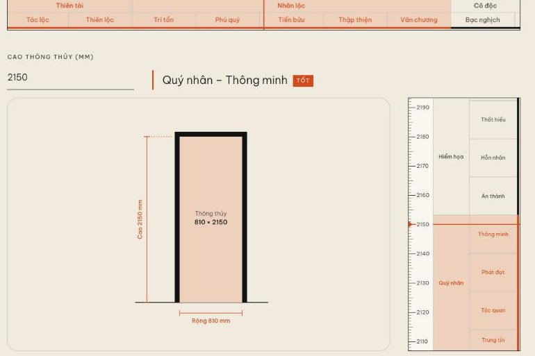
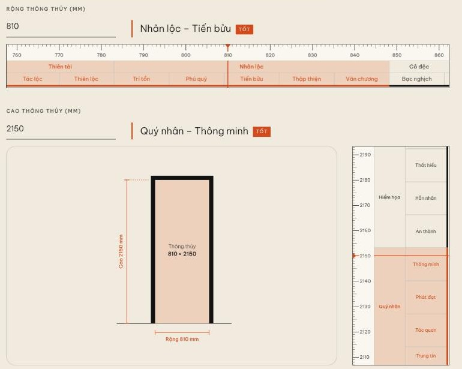

Nói ngắn: website Cửa Gỗ Đà Nẵng đã có công cụ tra thước Lỗ Ban 52,2cm miễn phí. Bạn nhập chiều rộng và chiều cao thông thủy của ô cửa (theo mm), công cụ cho biết mỗi kích thước rơi vào cung nào, tốt hay xấu, và nếu xấu thì gợi ý số đẹp gần nhất. Không cần cài đặt, dùng được trên điện thoại.
Vì sao làm công cụ này?
Khi đặt cửa chính, rất nhiều gia đình hỏi kích thước ô cửa có hợp thước Lỗ Ban không. Thay vì phải tìm thước giấy hay tra bảng, giờ bạn có thể tự kiểm tra ngay khi đang lên phương án, rồi gửi kích thước cho chúng tôi để làm bản vẽ.
Đo kích thước nào: thông thủy
Với cửa đi, cửa sổ, cửa cổng, kích thước được tính theo khoảng thông thủy (còn gọi là lọt lòng, lọt gió): phần trống còn lại sau khi trừ khung bao, và đo bằng thước Lỗ Ban 52,2cm (522mm).
Ví dụ: cửa phòng phủ bì 910 × 2200mm, trừ khung còn thông thủy 810 × 2150mm. Rộng 810mm rơi cung Nhân lộc – Tiến bửu, cao 2150mm rơi cung Quý nhân – Thông minh, cả hai đều tốt.
Cách dùng

- Nhập kích thước rộng và cao thông thủy theo mm, hoặc kéo thước: thước rộng kéo sang trái, phải; thước cao kéo lên, xuống.
- Đọc kết quả ngay bên cạnh: tên cung lớn, cung nhỏ và nhãn Tốt hoặc Xấu.
- Nếu rơi cung xấu, công cụ gợi ý số đẹp gần nhất về cả hai phía (nhỏ hơn và lớn hơn), bấm vào để thử ngay.
- Xem hình ô cửa vẽ theo đúng tỉ lệ rộng × cao bạn chọn, để hình dung cửa trước khi làm.
Thước Lỗ Ban 52,2cm chia cung thế nào?
Thước lặp lại mỗi 522mm: lấy kích thước (mm) chia cho 522, phần dư cho biết rơi vào cung nào. Mỗi chu kỳ có 8 cung lớn, mỗi cung dài 65,25mm, chia thành 5 cung nhỏ 13,05mm.
| Cung lớn | Phần dư (mm) | |
|---|---|---|
| Quý nhân | 0 – 65,25 | Tốt |
| Hiểm họa | 65,25 – 130,5 | Xấu |
| Thiên tai | 130,5 – 195,75 | Xấu |
| Thiên tài | 195,75 – 261 | Tốt |
| Nhân lộc | 261 – 326,25 | Tốt |
| Cô độc | 326,25 – 391,5 | Xấu |
| Thiên tặc | 391,5 – 456,75 | Xấu |
| Tể tướng | 456,75 – 522 | Tốt |
Công cụ trên website hiện đầy đủ 40 cung nhỏ của từng cung lớn.
Vài lưu ý
- Thước Lỗ Ban là quan niệm dân gian, có nhiều loại thước khác nhau; công cụ dùng loại 52,2cm thông dụng nhất cho cửa.
- Bếp, bậc thường dùng thước 42,9cm; bàn thờ, tủ dùng thước 38,8cm. Công cụ này không áp cho các loại đó.
- Theo quan niệm, cửa phòng vệ sinh không cần áp thước.
- Kích thước thông thủy phụ thuộc bản khung bao. Khi làm bản vẽ, chúng tôi tính khung bao sao cho thông thủy đúng số bạn chọn.
Đã chọn được kích thước đẹp? Gửi cho chúng tôi để dựng bản vẽ và báo giá.
Nhận báo giá